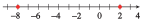

Exercises 2.11 Homework 2.5
¶In Problems 1–8,
Use absolute value notation to write each expression as an equation or an inequality. (It may be helpful to restate each sentence using the word distance.)
Illustrate the solutions on a number line.
1.
\(x\) is six units from the origin.
\(\abs{x}=6 \)

2.
\(a\) is seven units from the origin.
3.
The distance from \(p\) to \(-3\) is five units.
\(\abs{p+3}=5 \)
- 
4.
The distance from \(q\) to \(-7\) is two units.
5.
\(t\) is within three units of \(6\text{.}\)
\(\abs{t-6}\lt 3 \)

6.
\(w\) is no more than one unit from \(-5\text{.}\)
7.
\(b\) is at least \(0.5\) unit from \(-1\text{.}\)
\(\abs{b+1}\ge 0.5 \)

8.
\(m\) is more than \(0.1\) unit from \(8\text{.}\)
9.
Graph \(y = \abs{x + 3}\text{.}\) Use your graph to solve the following equations and inequalities.
\(\abs{x + 3} = 2 \)
\(\abs{x+3}\le 4 \)
\(\abs{x+3}\gt 5 \)

\(x = -5\) or \(x = -1\)
\(-7\le x\le 1\)
\(x\lt -8\) or \(x\gt 2\)
10.
Graph \(y = \abs{x -2}\text{.}\) Use your graph to solve the following equations and inequalities.
\(\abs{x-2} = 5 \)
\(\abs{x-2}\lt 8 \)
\(\abs{x-2}\ge 4 \)
11.
Graph \(y = \abs{2x-8}\text{.}\) Use your graph to solve the following equations and inequalities.
\(\abs{2x-8} = 0 \)
\(\abs{2x-8}=-2 \)
\(\abs{2x-8}\lt -6 \)

\(x = 4\)
No solution
No solution
12.
Graph \(y = \abs{4x+8}\text{.}\) Use your graph to solve the following equations and inequalities.
\(\abs{4x+8} = 0 \)
\(\abs{4x+8}\lt 0 \)
\(\abs{4x+8}\gt -3 \)
For Problems 13-24, solve.
13.
\(\abs{2x-1}=4 \)
\(x=\dfrac{-3}{2} \) or \(x=\dfrac{5}{2} \)
14.
\(\abs{3x-1}=5 \)
15.
\(0=\abs{7+3q} \)
\(q=\dfrac{-7}{3} \)
16.
\(\abs{-11-5t}=0 \)
17.
\(4=\dfrac{\abs{b+2}}{3} \)
\(b=-14 \) or \(b=10 \)
18.
\(6\abs{n+2}=9 \)
19.
\(\abs{2(w-7)}=1 \)
\(w=\dfrac{13}{2} \) or \(w=\dfrac{15}{2} \)
20.
\(2=\abs{\dfrac{a-4}{5}} \)
21.
\(\abs{c-2}+3=1 \)
No solution
22.
\(5=4-\abs{h+3} \)
23.
\(-7=\abs{2m+3} \)
No solution
24.
\(\abs{5r-3}=-2 \)
For Problems 25-36, solve.
25.
\(\abs{2x+6}\lt 3 \)
\(\dfrac{-9}{2}\lt x \lt \dfrac{-3}{2} \)
26.
\(\abs{5-3x}\le 1 \)
27.
\(7\le \abs{3-2d} \)
\(d\le -2~ \) or \(~ d\ge 5 \)
28.
\(10 \lt \abs{3r+2} \)
29.
\(\abs{6s+15}\gt -3 \)
All real numbers
30.
\(\abs{8b-12}\lt -4 \)
31.
\(\abs{t-1.5}\lt 0.1 \)
\(1.4 \lt t\lt 1.6 \)
32.
\(\abs{z-2.6}\le 0.1 \)
33.
\(\abs{T-3.25}\ge 0.05 \)
\(T\le 3.2~\) or \(~T\ge 3.3 \)
34.
\(\abs{P-0.6}\gt 0.01 \)
35.
\(-1\ge \abs{\dfrac{n-3}{2}} \)
No solution
36.
\(-0.1\le \abs{9(p+2)} \)
In Problems 37–40, give an interval of possible values for the measurement.
37.
The length, \(l\text{,}\) of a rod is given by \(\abs{l - 4.3}\lt 0.001\text{,}\) in centimeters.
\(4.299\lt l\lt 4.301\)
38.
The mass, \(m\text{,}\) of the device shall be \(\abs{m - 450}\lt 4\text{,}\) in grams.
39.
The candle will burn for \(t\) minutes, where \(\abs{t - 300}\le 50\text{.}\)
\(250\le t\le 350\)
40.
The ramp will have angle of inclination \(\alpha\text{,}\) and \(\abs{\alpha - 10\degree}\le 0.5\degree\text{.}\)
In Problems 41–44, write the error tolerance using absolute values.
41.
The chemical compound must be maintained at a temperature, \(T\text{,}\) between \(4.7\degree\) and \(5.3\degree\)C.
\(\abs{T - 5}\lt 0.3\)
42.
The diameter, \(d\text{,}\) of the hole shall be in the range of \(24.98\) to \(25.02\) centimeters.
43.
The subject will receive a dosage \(D\) from \(95\) to \(105\) milligrams of the drug.
\(\abs{D-100}\le 5\)
44.
The pendulum swings out and back in a time period \(t\) between \(0.9995\) and \(1.0005\) seconds.
45.
An electrical component of a high-tech sensor requires \(0.25\) ounce of gold. Assume that the actual amount of gold used, \(g\text{,}\) is not in error by more than \(0.001\) ounce. Write an absolute value inequality for the possible error and show the possible values of \(g\) on a number line.
\(\abs{g-0.25}\le 0.001\)

46.
In a pasteurization process, milk is to be irradiated for \(10\) seconds. The actual period \(t\) of irradiation cannot be off by more than \(0.8\) second. Write an absolute value inequality for the possible error and show the possiblev alues of \(t\) on a number line.
47.
In a lab assignment, a student reports that a chemical reaction required \(200\) minutes to complete. Let \(t\) represent the actual time of the reaction.
Write an absolute value inequality for \(t\text{,}\) assuming that the student rounded his answer to the nearest \(100\) minutes. Give the smallest and largest possible value for \(t\text{.}\)
Write an absolute value inequality for \(t\text{,}\) assuming that the student rounded his answer to the nearest minute. Give the smallest and largest possible value for \(t\text{.}\)
Write an absolute value inequality for \(t\text{,}\) assuming that the student rounded his answer to the nearest \(0.1\) minute. Give the smallest and largest possible value for \(t\text{.}\)
48.
An espresso machine has a square metal plate. The side of the plate is \(2\pm 0.01\) cm.
Write an absolute value inequality for the length of the side, \(x\text{.}\) Give the smallest and largest possible value for s.
Compute the smallest and largest possible area of the plate, including units.
Write an absolute value inequality for the area, \(A\text{.}\)
49.
Write the piecewise definition for \(\abs{3x - 6}\text{.}\)
Use your answer to part (a) to write two inequalities that together are equivalent to \(\abs{3x - 6}\lt 9\text{.}\)
Solve the inequalities in part (b) and check that the solutions agree with the solutions of \(\abs{3x - 6}\lt 9\text{.}\)
Show that \(\abs{3x - 6}\lt 9\) is equivalent to the compound inequality \(-9\lt 3x - 6\lt 9\text{.}\)
\(\abs{3x-6} = \begin{cases} -(3x-6) \amp \text{if } x\lt 2 \\ 3x-6 \amp \text{if } x\ge 2 \end{cases}\)
\(-(3x - 6)\le 9\text{,}\) \(~3x - 6\lt 9\)
\(-1\lt x\lt 5\)
The solutions are the same.
50.
Write the piecewise definition for \(\abs{3x - 6}\text{.}\)
Use your answer to part (a) to write two inequalities that together are equivalent to \(\abs{3x - 6}\gt 9\text{.}\)
Solve the inequalities in part (b) and check that the solutions agree with the solutions of \(\abs{3x - 6}\gt 9\text{.}\)
Show that \(\abs{3x - 6}\gt 9\) is equivalent to the compound inequality \(3x - 6\lt -9~\) or \(~3x-6\gt 9\text{.}\)
51.
Write the piecewise definition for \(\abs{2x+5}\text{.}\)
Use your answer to part (a) to write two inequalities that together are equivalent to \(\abs{2x+5}\gt 7\text{.}\)
Solve the inequalities in part (b) and check that the solutions agree with the solutions of \(\abs{2x+5}\gt 7\text{.}\)
Show that \(\abs{2x+5}\gt 7\) is equivalent to the compound inequality \(2x+5\lt -7~\) or \(~2x+5\gt 7\text{.}\)
\(\abs{2x+5} = \begin{cases} -(2x+5) \amp \text{if } x\lt \dfrac{-5}{2} \\ 2x+5 \amp \text{if } x\ge \dfrac{-5}{2} \end{cases}\)
\(-(2x+5)\gt 7\text{,}\) \(~2x+5\gt 7\)
\(x\lt -6\) or \(~x\gt 1\)
The solutions are the same.
52.
Write the piecewise definition for \(\abs{2x+5}\text{.}\)
Use your answer to part (a) to write two inequalities that together are equivalent to \(\abs{2x+5}\lt 7\text{.}\)
Solve the inequalities in part (b) and check that the solutions agree with the solutions of \(\abs{2x+5}\lt 7\text{.}\)
Show that \(\abs{2x+5}\lt 7\) is equivalent to the compound inequality \(-7\lt 2x+5\lt 7\text{.}\)
For Problems 53–56, graph the function and answer the questions.
53.
\(f (x) = \abs{x + 4} + \abs{x - 4}\)
Using your graph, write a piecewise formula for \(f (x)\text{.}\)
Experiment by graphing \(g(x) = \abs{x + p} + \abs{x - q}\) for different positive values of \(p\) and \(q\text{.}\) Make a conjecture about how the graph depends on \(p\) and \(q\text{.}\)
Write a piecewise formula for \(g(x) = \abs{x + p} + \abs{x - q}\text{.}\)

\(f(x) = \begin{cases} -2x, \amp x\lt -4 \\ 8, \amp -4\le x\le 4 \\ 2x, \amp x\gt 4 \end{cases} \)
The graphs looks like like a trough. The middle horizontal section is \(y = p + q\) for \(-p \le x\le q\text{,}\) the left side, \(x\lt -p\text{,}\) has slope \(-2\) and the right side, \(x\gt q\text{,}\) has slope \(2\text{.}\)
\(g(x) = \begin{cases} -2x+q-p, \amp x\lt -p \\ p+q, \amp -p\le x\le q \\ 2x+p-q, \amp x\gt q \end{cases} \)
54.
\(f (x) = \abs{x + 4} - \abs{x - 4}\)
Using your graph, write a piecewise formula for \(f (x)\text{.}\)
Experiment by graphing \(g(x) = \abs{x + p} - \abs{x - q}\) for different positive values of \(p\) and \(q\text{.}\) Make a conjecture about how the graph depends on \(p\) and \(q\text{.}\)
55.
\(f (x) = \abs{x + 4} +\abs{x} + \abs{x - 4}\)
Using your graph, write a piecewise formula for \(f (x)\text{.}\)
What is the minimum value of \(f (x)\text{?}\)
If \(p, q \ge 0\text{,}\) what is the minimum value of \(g(x) = \abs{x + p}+\abs{x} + \abs{x - q}\text{?}\)
\(f(x) = \begin{cases} -3x, \amp x\lt -4 \\ -x+8, \amp -4\le x\le 0 \\ x+8, \amp 0\lt x\lt 4 \\ 3x, \amp x\ge 4 \end{cases} \)
\(8\)
\(p+q\)
56.
\(f(x) = \abs{x + 4} -\abs{x}+ \abs{x - 4}\)
Using your graph, write a piecewise formula for \(f (x)\text{.}\)
What is the minimum value of \(f (x)\text{?}\)
If \(p, q \ge 0\text{,}\) what is the minimum value of \(g(x) = \abs{x + p}-\abs{x} + \abs{x - q}\text{?}\)
Problems 57–60 use the absolute value function to model distance. Use the strategy outlined in Problems 57 and 58 to solve Problems 59 and 60.
57.
A small pottery is setting up a workshop to produce mugs. Three machines are located on a long table, as shown in the figure. The potter must use each machine once in the course of producing a mug. Let \(x\) represent the coordinate of the potter's station.
Write expressions for the distance from the potter's station to each of the machines.
Write a function that gives the sum of the distances from the potter's station to the three machines.
Graph your function for \(-20\le x\le 30\text{.}\) Where should the potter stand in order to minimize the distance she must walk to the machines?
\(\abs{x + 12}\text{,}\) \(\abs{x + 4}\text{,}\) \(\abs{x - 24}\)
\(f(x)=\abs{x + 12}+\abs{x + 4}+\abs{x - 24}\)
-

At \(x\)-coordinate \(-4\)
58.
Suppose the pottery in Problem 57 adds a fourth machine to the procedure for producing a mug, located at \(x = 16\) in the figure.
Write and graph a new function for the sum of the potter's distances to the four machines.
Where should the potter stand now to minimize the distance she has to walk while producing a mug?
59.
Richard and Marian are moving to Parkville to take jobs after they graduate. The main road through Parkville runs east and west, crossing a river in the center of town. Richard's job is located \(10\) miles east of the river on the main road, and Marian's job is \(6\) miles west of the river. There is a health club they both like located \(2\) miles east of the river. If they plan to visit the health club every workday, where should Richard and Marian look for an apartment to minimize their total daily driving distance?
\(2\) miles east of the river
60.
Romina's Bakery has just signed contracts to provide baked goods for three new restaurants located on Route 28 outside of town. The Coffee Stop is \(2\) miles north of town center, Sneaky Pete's is \(8\) miles north, and the Sea Shell is \(12\) miles south. Romina wants to open a branch bakery on Route 28 to handle the new business. Where should she locate the bakery in order to minimize the distance she must drive for deliveries?